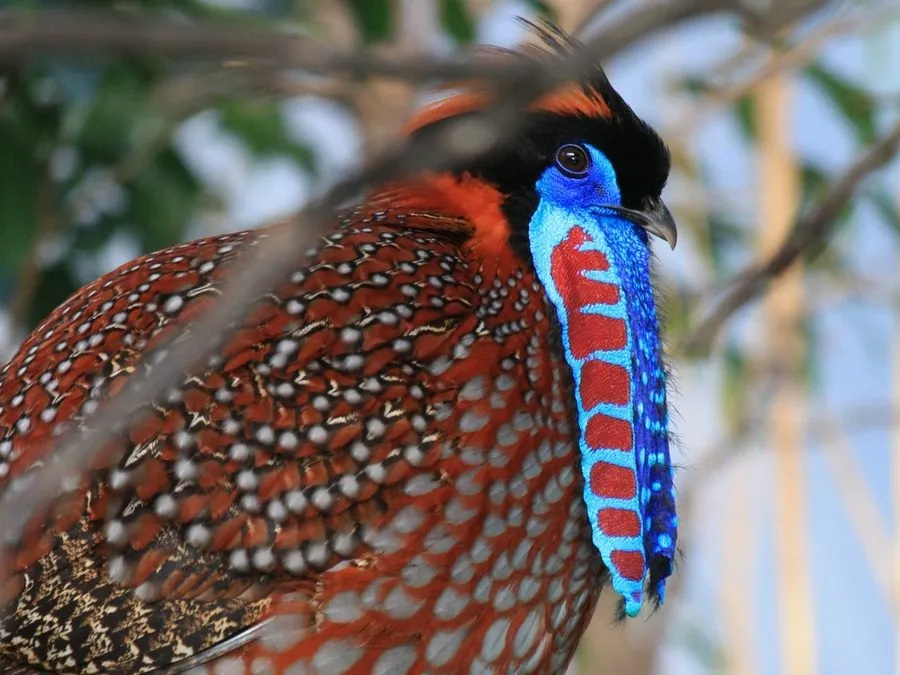

鸟类 · 动物界
红腹角雉 Tragopan temminckii

雄鸟通体橙红，背具灰色虫蠹纹，头顶生蓝色肉质“角”，喉部肉裙可膨胀展示。栖息于中国西南山地云雾林，求偶姿态奇特。
- 分类
- 门脊索动物门纲鸟纲目鸡形目科雉科属角雉属
- 栖息环境
- 海拔 1000–3500 米的常绿阔叶林、针阔混交林、竹林与杜鹃灌丛，偏好潮湿云雾林。
- 地理分布
- 喜马拉雅东部至中国中部山地，包括西藏、云南、四川、陕西、湖北及贵州北部。
- 保护级别
- IUCN 红色名录列为无危（LC）；中国国家二级保护野生动物，列入 CITES 附录二。
物种志
红腹角雉体长约四十四至六十四厘米，体重九百至一千四百克。雄鸟极为华丽：脸部和头顶裸皮蓝色，头顶可竖起一对蓝色肉质角；上体灰褐并具黑色与淡灰色虫蠹状细纹，胸腹和下体呈鲜艳的橙红色，缀有灰色斑点。喉部有一块可膨胀的肉质裙，求偶时充血展开。雌鸟通体棕褐，密布黑色虫蠹斑，体型较小。虹膜褐色，嘴黑，脚粉红。
它栖息于海拔一千至三千五百米的常绿阔叶林、针阔混交林与竹林中，性隐秘，多在林下落叶层刨食果实、嫩叶、种子与昆虫。繁殖期雄鸟在雌鸟面前展开肉裙、抖动双角并发出低沉的“呼—呼”声。巢多筑于树上横枝或地面凹陷处，每窝产卵三至五枚。红腹角雉分布于喜马拉雅东部至中国中部山地，包括西藏、云南、四川、陕西、湖北等地，被列为国家二级保护动物。
形态与习性
- 体长44–64 厘米
- 体重900–1400 克
- 食性果实、嫩叶、种子与昆虫
- 繁殖树上或地面营巢，每窝 3–5 枚
- 特征头顶肉质角与喉部肉裙可展示
- 保护级别国家二级；IUCN 无危
趣味知识
- 求偶时喉部肉裙充血膨胀，露出蓝红相间的斑纹。
- 雄鸟头顶的一对肉质角可以竖起，并非真正的角。
- 雌鸟羽色黯淡，与雄鸟判若两鸟，善于在落叶层中隐蔽。